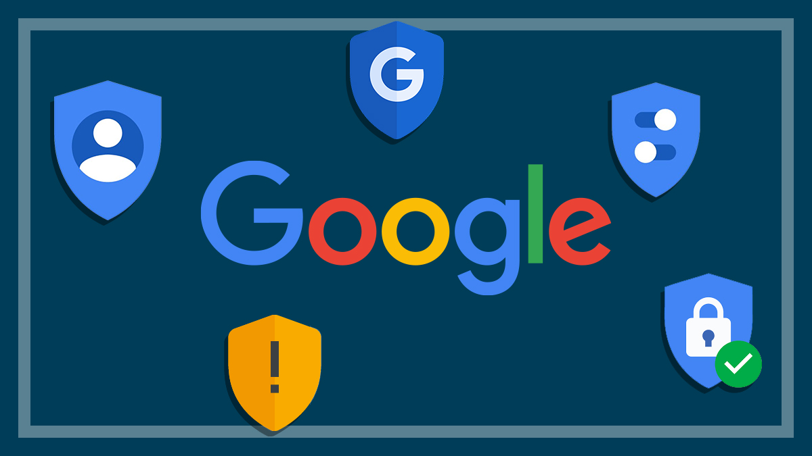

Securing your Google Privacy settings
Your Google account holds a vast amount of personal information, from search history and emails to location data and payment details. Without proper privacy settings, you risk exposing sensitive data to advertisers, third-party apps, or even cybercriminals.
Risks of Poor Google Privacy settings
- Excessive Data Collection:Google tracks your online behavior for targeted ads and recommendations. Without control, this can lead to intrusive ads and oversharing of your personal preferences.
- Security Breaches: A weakly secured account is vulnerable to hacking, phishing, and identity theft, putting your data and finances at risk.
- Location Tracking: Google can store your movements, which can be exploited by malicious actors if not properly controlled.
- Data Misuse: Hackers can use your personal details to impersonate you or commit fraud.